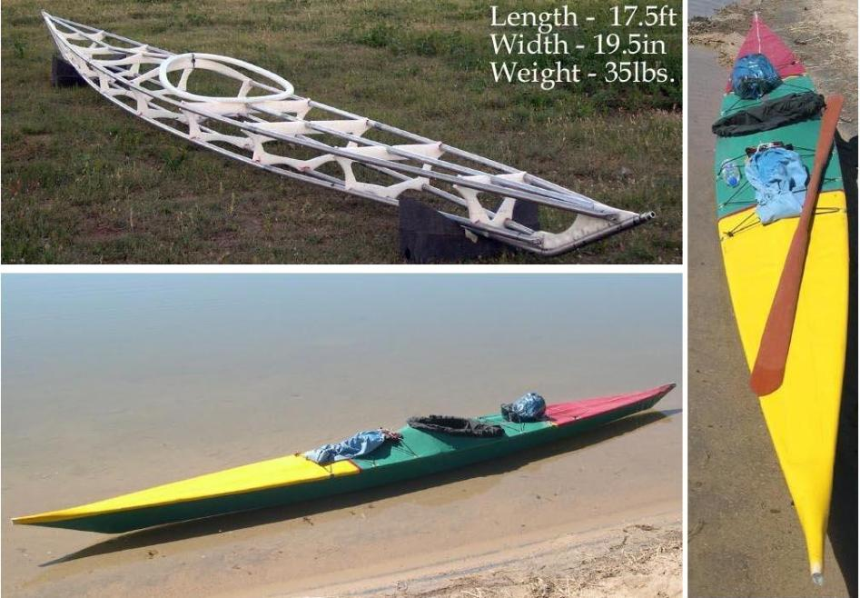

| Sea Rider | Menu Previous Page Next Page |
|

The Sea Rider has greater rocker, chine flare, and deadrise than the Sea Rover and Sea Ranger and is designed for quick turning. Stability is good for a kayak of this size. The low aft deck( 6.5") limits gear storage for touring. Maximum paddler weight is 200lbs. Offsets are available for the original SOF single-chine, plus new SOF multi-chine and woodstrip versions. Sea Rider Offsets are at the end of this section. Use the (BACK) key to return. An aluminum tube coaming has recently been added to the Sea Rider. Details can be found in the Aluminum / Freestanding Coaming section of the manual. Use the {BACK} key to return. Matt Noonan has kept a journal of his Sea Rider project. Notes and pics of his kayaks construction can found at the following LINK. Use the {Back} key to return. |
|